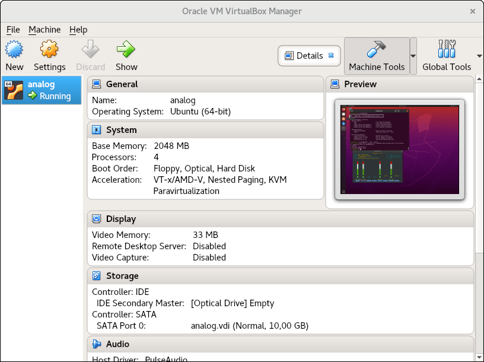
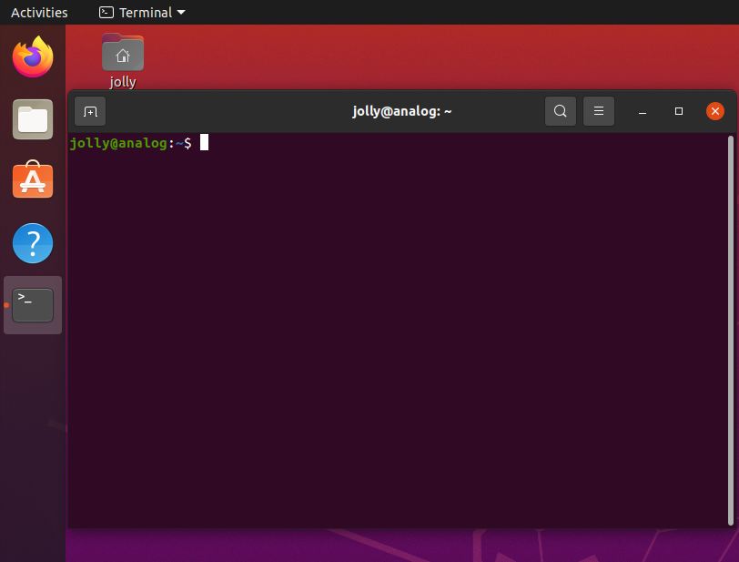

Software installation
Introduction
This document is a step-by-step tutorial on how to install osmocom-analog on Ubuntu.
It should work similar on Debian, Raspberry PI and similar distributions.
All osmocom-analog networks can run on sound card connected to radio transmitters and receivers.
This is quite heavy to handle and finding a usable transmitter and receiver - and this for each network and channel.
I highly suggest to use SDR.
In this tutorial I use LimeSDR (or LimeSDR Mini) to make things as easy as possible.
Installing in a Virtual Machine

I do not recommend to use a virtual machine, especially for running C-Netz, which does not work, if there is a slight buffer underrun or overrun.
It might work with other networks.
You may try it out.
Skip this, if you want to install osmocom-analog on a real machine.
Download VirtualBox from https://www.virtualbox.org.
Follow the installation guide there for your OS.
Be sure to install the extension package, so that you can use USB2.0 / USB3.0 which you need to pass through LimeSDR or LimeSDR Mini.
Create a virtual machine with the following settings:
- Create a virtual machine with Ubuntu (64-bit)
- Choose memory size of at least 2 GB
- Create a virtual hard drive with at least 10 GB
- Emulate sound with output and input
- Select USB 3.0 (xHCI) Controller
Your machine should now be able to boot and ask for an installation medium.
Choose the Ubuntu installation ISO as optical drive image.
Installing Ubuntu

Download Ubuntu from https://ubuntu.com.
You may choose to install the desktop or server version.
In this tutorial I will install the desktop version, because it is much easier.
Burn this ISO image onto a CD or create a bootable USB stick.
Start your machine and Ubuntu should load from installation image.
The installer will automatically start.
In this tutorial I select "Install Ubuntu" and do a "Minimal installation".
In case you install it on a virtual machine, select "Erase disk and install Ubuntu".
Please refer to the Ubuntu installation guide for more details.
Installing Libraries
osmocom-analog has very little dependencies on libraries.
No all are required, but you need to install libraries, depending on what you want to do.
Hint: Press "L-CTRL + L-ALT + T" to open a terminal.
If you want to connect analog radio equipment or just a headset to talk through the base station with the mobile use, you need Alsa Sound support.
If you don't have Alsa support, the mobile user will only hear a test music when calling.
Also if you want to bridge calls or use Osmo-CC interface, you do not need sound support.
# sudo apt install libasound2-dev
If you want to use SDR support, you need to install SoapySDR library and tools.
It is also possible to use UHD devices, but this is beyond the scope of this document.
To make things easy, I use LimeSDR or LimeSDR Mini.
Ubuntu also installs all drivers for SoapySDR, including "lime".
# sudo apt install libsoapysdr-dev
# sudo apt install soapysdr-tools
If you want to emulate the software clone of "Datenklo", an analog modem, you need (beside sound support) Fuse, for emulating a serial device in user space.
# sudo apt install libfuse3-dev
If you want to generate a TV signal, you can read PPM images. If you want other images to be read, you need Imagemagick 7, which is (currently) not available for Ubuntu.
Please refer to https://linuxconfig.org/how-to-install-imagemagick-7-on-ubuntu-18-04-linux on how to install it manually.
Installing osmocom-analog
Use GIT to clone latest source repository. First you need to install GIT.
# sudo apt install git
Then you can clone osmocom-analog from git://git.osmocom.org/osmocom-analog in your home directory.
# cd ~
# git clone git://git.osmocom.org/osmocom-analog
Cloning into 'osmocom-analog'...
...
Before you can compile, you need to install "autoconf", "gcc" and "make".
# sudo apt install autoconf
# sudo apt install gcc
# sudo apt install make
Change to the repository directory and run "autoconf -if" once. This is only needed the first time compiling. It will generate the configure script.
# cd osmocom-analog
# autoreconf -if
configure.ac:15: installing './compile'
configure.ac:25: installing './config.guess'
configure.ac:25: installing './config.sub'
configure.ac:6: installing './install-sh'
configure.ac:6: installing './missing'
extra/Makefile.am: installing './depcomp'
#
Run configure script. It will generate the make files depending on your supported libraries.
# ./configure
...
checking for ALSA... yes
checking for UHD... no
checking for SOAPY... yes
checking for IMAGEMAGICK... yes
checking for FUSE... yes
configure: Compiling with Alsa support
configure: UHD SDR not supported. Consider adjusting the PKG_CONFIG_PATH
environment variable if you installed software in a non-standard prefix.
configure: Compiling with SoapySDR support
configure: Compiling with ImageMagick
configure: Compiling with FUSE
..
#
Run "make" and "make install" to build and install osmocom-analog.
# make clean # always do this after you pulled from GIT server
# make
...
# sudo make install
...
Test
To test Audio, use Ubuntu's settings to see if you get audio working at all, before you search for problems at osmocom-analog.
If you can hear sound, you can run B-Netz which should give a clean FSK audio signal.
# bnetz -k 17
...
You shoud get audio.
If not, check out the volume setting.
Try ohter software that uses Alsa sound output.
To test SDR, check you USB device.
In case of a virtual machine you need to pass through the LimeSDR device.
In this example, LimeSDR is connected to Device 2 of Bus 2.
# lsusb
Bus 002 Device 002: ID 1d50:6108 OpenMoko, Inc. Myriad-RF LimeSDR
Bus 002 Device 001: ID 1d6b:0003 Linux Foundation 3.0 root hub
Bus 001 Device 002: ID 80ee:0021 VirtualBox USB Tablet
Bus 001 Device 001: ID 1d6b:0002 Linux Foundation 2.0 root hub
Now check if the SoapySDR driver finds a device with driver "lime".
# SoapySDRUtil --find
######################################################
## Soapy SDR -- the SDR abstraction library ##
######################################################
...
Found device 3
addr = 1d50:6108
driver = lime
label = LimeSDR-USB [USB 3.0] 9062000C42D1A
media = USB 3.0
module = FX3
name = LimeSDR-USB
serial = 0009062000C42D1A
#
If this is the case you can try to run a base station.
I suggest to use a B-Netz base station, because it transmits a nice FSK sound at 153.330 MHz.
Use a radio to listen to that frequency.
# bnetz --limesdr -k 17 # for LimeSDR
# bnetz --limesdr-mini -k 17 # for LimeSDR Mini
Do you hear the whistling sound on your radio? Now you can continue with the radio setup.
[Back to main page]
|